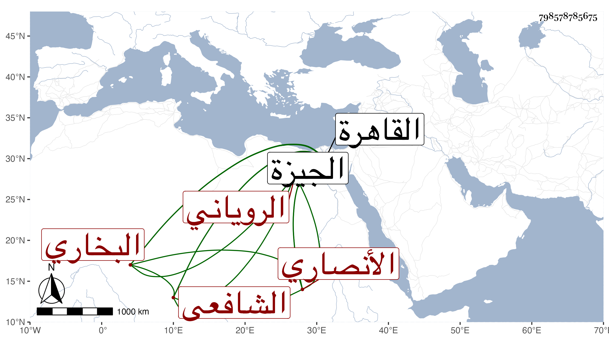

0902Sakhawi.DawLamic.ITO20230111-ara1.EIS1600.798578785675
Biography ID: 798578785675
850
نصر الله بن عبد الرحمن بن أحمد بن إسماعيل الجلال الأنصاري البخاري الروياني الكجوري الشافعي ورأيت من نسبه جلاليا . ولد في سنة ست وستين وسبعمائة بكجور إحدى قرى رويان واشتغل وأدرك المشايخ وتجرد وبرع في علم الحكمة والفلسفة وتصوفها وشارك في الفنون وعرف العربية وغيرها وكتب الخط الفائق ثم قدم القاهرة بعد الثمانمائة مجردا واتصل بأمراء الدولة وراج عليهم لما ينسب إليه من معرفة علم الحرف وعمل الأوفاق وسكن المدرسة المنصورية وصار له في البيمارستان الرواتب السنية بل كان هو صاحب الحل والعقد فيه وكان فصيحا مفوها حسن التأني عارفا بالأمور الدنيوية عريا عن معرفة الفقه مفضالا مطعاما محبا للغرباء فهرعوا إليه ولازموه وقام بأمرهم وصيرهم سوقه التي ينفق منها وينفق بها واستخلص بسبب ذلك من أموال الأمراء وغيرهم ما أراد حتى كان كثير من الأمراء يفرد له من إقطاعه أرضا يصيرها له رزقة ثم يسعى هو حتى يشتريها ويحبسها مقتدرا على التوصل لما يطلب كثير العصبية والمروءة حسن السياسة والعشرة والمداراة عظيم الأدب جميل المجالسة وقف داره التي كان يسكنها بالقرب من خان الخليلي وجعلها رباطا يأوي إليه الفقراء والغرباء الواردون من البلاد وأرصد عليه رزقته التي كانت بأنبابه وصارت مشهورة بزاوية نصر الله وفتح لها شباكا على الطريق ووقف عليها كتبا منها الفصوص وغيره من تصانيف ابن عربي ، وله عدة تصانيف في علم الحرف والتصوف منها غنية الطالب فيما اشتمل عليه الوهم من المطالب وإعلام الشهود بحقائق الوجود وأقرأ كتاب الفصوص لابن عربي خفية فكان ممن أخذه عنه الشمس الشرواني ولذا قال العيني : وكان يتهم بالاشتغال بكتاب الفصوص ونحوه قال وعرض عليه الناصر كتابة السر فأبى . مات بعد أن قدم بين يديه في شهر موته أربعة أفراط واشتد حزنه على الأخير في ليلة الجمعة سادس رجب سنة ثلاث وثلاثين بالطاعون وصلي عليه ودفن بتربة السراج الهندي وقول بعضهم بزاويته غلط رحمه الله وعفا عنه ، ورأيته كتب على استدعاء ابن شيخنا في سنة إحدى وعشرين ، وسمى بعضهم والده عبد الله . وقال يوسف بن تغرى بردى أن والده هو الذي نوه به وصارت له وجاهة في الدولة وأنه جمع الكتب النفيسة وله مشاركة في فنون وفضيلة تامة سيما في علم الحرف وما أشبهه مع معرفة بالألسن الثلاثة العربي والعجمي والتركي ، قال وكان يتحف الوالد بالهياكل والخواتم بل صنع له مرة خاتما يوضع على الثعبان يفر منه أو يموت أعجب الوالد إعجابا كثيرا وأنعم عليه برزقة في بر الجيزة نحو مائة فدان وأظنها الآن وقفا على زاويته ، وكذا له حكاية شبيهة بهذه في يحيى بن أحمد بن عمران العطار مع إنكاره لها ، وهو في عقود المقريزي وسماه ابن عبد الله بن محمد بن إسماعيل .
